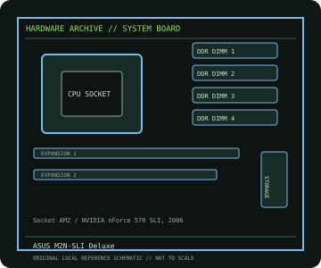

[ INDIVIDUAL COMPONENT // MOTHERBOARDS ]
ASUS M2N-SLI Deluxe
M2N-SLI Deluxe: Socket AM2 / NVIDIA nForce 570 SLI, 2006; revision-aware Socket motherboard specifications, CPU/BIOS qualification, board size, memory, expansion, storage and I/O.

IDENTIFICATION: M2N-SLI Deluxe model (not Wireless Edition); verify PCB identity and installed BIOS. Confirm the exact silkscreen, revision and firmware on the physical board; near-name variants can use different BIOS files and connectors.
Specifications
| Catalog subcategory | AMD Socket platforms |
|---|---|
| Exact board / model | M2N-SLI Deluxe — M2N-SLI Deluxe model (not Wireless Edition); verify PCB identity and installed BIOS |
| Platform and chipset | Socket AM2 / NVIDIA nForce 570 SLI, 2006; NVIDIA nForce 570 SLI. |
| CPU and BIOS support | Socket AM2; supports ASUS-listed Athlon 64 FX/X2, Athlon 64 and Sempron processors with the BIOS specified in the CPU table. |
| Memory | Four DDR2 DIMM sockets, dual-channel, maximum 8 GB; supported rates depend on CPU, DIMM organization and BIOS. |
| Board size / form factor | ATX, 305 × 244 mm. |
| Expansion and storage | Two PCIe x16-length graphics slots for SLI, two PCIe x1 and two PCI slots; six SATA 3 Gb/s ports plus controller-provided eSATA; PATA also provided. |
| Rear I/O and compatibility | USB 2.0, Gigabit Ethernet, 8-channel HD audio, PS/2 and coaxial/optical digital audio; discrete PCIe graphics required. This entry is the M2N-SLI Deluxe, distinct from M2N-SLI Deluxe/Wireless Edition. Check the ASUS CPU table for BIOS floor and the manual for DIMM population, SLI, SATA and eSATA controller sharing. |
Compatibility and revision notes
This entry is the M2N-SLI Deluxe, distinct from M2N-SLI Deluxe/Wireless Edition. Check the ASUS CPU table for BIOS floor and the manual for DIMM population, SLI, SATA and eSATA controller sharing.
Before installation, compare the physical board and revision against the manufacturer manual. Check socket condition, CPU power requirements, cooler/chassis clearance, DIMM population order, power connectors and any shared PCIe or SATA lanes. Update firmware only with the exact model’s supported procedure.
Preservation and repair
Record the PCB revision, BIOS identifier, serial/date code, installed CPU and memory, accessories, known faults, repairs and test conditions. Use ESD-safe handling and inspect for socket damage, corrosion, leaking capacitors and loose conductive hardware before power-up.
Sources & further reading
- ASUS M2N-SLI Deluxe manual/supportManufacturer manual and model documentation (ASUS groups regional/Wireless Edition materials on its support index).
- ASUS M2N-SLI Deluxe CPU supportManufacturer CPU support lookup; use the exact PCB/model variant and required BIOS.
Manufacturer documentation is authoritative for supported CPUs, minimum BIOS, memory qualification and revision-specific wiring. Do not transfer compatibility claims or firmware between similar model names.